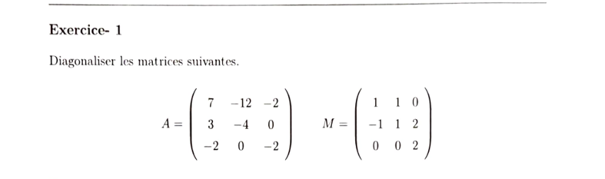
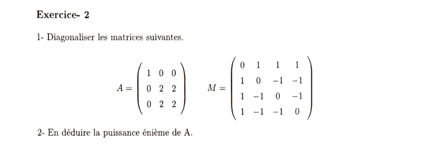
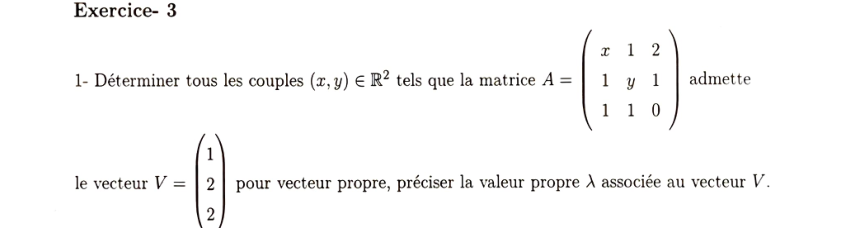
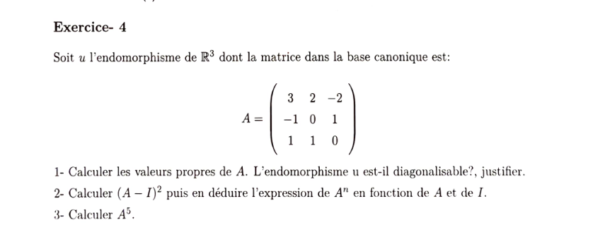
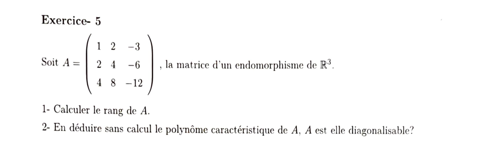
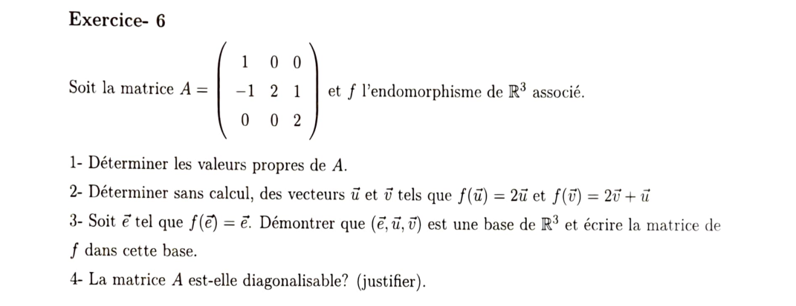

Valeurs propres, diagonalisation et réduction des endomorphismes
Cours L. Graissot (ECAM AM2, 2026-2027) : CM 5 (valeurs propres et vecteurs propres d'une matrice, polynôme caractéristique, diagonalisation d'une matrice) et CM 6 (éléments propres d'un endomorphisme, sous-espaces propres, somme directe, diagonalisation d'un endomorphisme). La page contient aussi le TD 5 corrigé (exercices 1 → 6). Pas de corrigé officiel fourni : tout est résolu maison et vérifié (trace, déterminant, produits P⁻¹AP).
1. Résumé de cours détaillé
1.1 Valeurs propres et vecteurs propres (CM 5)
Un vecteur propre n'est jamais le vecteur nul, mais \(\lambda=0\) est possible : \(AX=0\) signifie \(X\in\ker A\). Si \(X\) est propre, alors \(\alpha X\) (\(\alpha\neq0\)) l'est aussi.
Idée de preuve (récurrence sur \(r\)) : on suppose \(\sum\alpha_iX_i=0\), on applique \(A\), on retranche \(\lambda_r\) fois la relation initiale : le terme en \(X_r\) disparaît, l'hypothèse de récurrence donne \(\alpha_i(\lambda_i-\lambda_r)=0\), donc \(\alpha_i=0\) puis \(\alpha_r=0\).
1.2 Polynôme caractéristique (CM 5)
Pour \(\lambda\in\mathbb K\) : \(\lambda\) valeur propre \(\Leftrightarrow\det(A-\lambda I_n)=0\) \(\Leftrightarrow\chi_A(\lambda)=0\). Comme \(\chi_A\) est de degré \(n\), \(A\) admet au plus \(n\) valeurs propres ; sur \(\mathbb C\), toute matrice en admet au moins une.
- Matrices semblables (\(B=P^{-1}AP\)) : même polynôme caractéristique (\(\det(P^{-1})\det(P)=1\)).
- Matrice triangulaire : \(\chi_A(X)=\prod(a_{ii}-X)\), donc les valeurs propres sont les éléments diagonaux.
- Matrice \(2\times2\) : \(\chi_A(X)=X^2-(a+d)X+(ad-bc)\).
1.3 Diagonalisation d'une matrice (CM 5)
Pourquoi \(P\) inversible : par le théorème 1, les \(X_i\) forment une famille libre de \(n\) vecteurs de \(\mathbb K^n\), donc une base.
1.4 Éléments propres d'un endomorphisme (CM 6)
Si \(\dim E=n\) et \(A\) est la matrice de \(f\) dans une base \(\mathcal B\), alors \(\lambda\) valeur propre de \(f\) \(\Leftrightarrow\) \(\lambda\) valeur propre de \(A\) ; \(\chi_f=\chi_A\) ne dépend pas de la base (proposition 2 du CM : matrices semblables).
Somme directe : \(E_1+\dots+E_r\) est directe si \(v_1+\dots+v_r=0\) avec \(v_i\in E_i\) entraîne \(v_i=0\) pour tout \(i\). Équivalent : \(\dim(E_1+\dots+E_r)=\sum\dim E_i\). Si la somme est égale à \(E\), on note \(E=E_1\oplus\dots\oplus E_r\).
1.5 Polynôme caractéristique et multiplicités (CM 6)
Proposition 3 : \(\lambda\) valeur propre de \(f\) \(\Leftrightarrow\chi_f(\lambda)=0\). Proposition 4 : \(\chi_f(X)=(-1)^nX^n+(-1)^{n-1}(\mathrm{tr}f)X^{n-1}+\dots+\det f\), avec \(\mathrm{tr}f=\mathrm{tr}A\) et \(\det f=\det A\).
1.6 Endomorphisme diagonalisable (CM 6)
Proposition 6. Si \(\lambda_1,\dots,\lambda_r\) sont les valeurs propres distinctes de \(f\) : \(f\) diagonalisable \(\Leftrightarrow E=E_{\lambda_1}\oplus\dots\oplus E_{\lambda_r}\).
Même critère pour une matrice : \(A\) diagonalisable \(\Leftrightarrow\) \(\chi_A\) scindé et \(m(\lambda)=\dim\ker(A-\lambda I_n)\) pour chaque \(\lambda\).
1.7 Exemples du cours corrigés
1) Valeurs propres
Étape 1 : \(A\) est triangulaire inférieure, donc les valeurs propres sont sur la diagonale.
2) Vecteurs propres
Étape 2 : pour \(\lambda=1\), \(A-I=\begin{pmatrix}0&0&0\\5&-5&0\\6&-6&1\end{pmatrix}\). La 2ᵉ ligne donne \(x=y\), la 3ᵉ donne \(z=0\) : \(X_1=(1,1,0)\).
Étape 3 : pour \(\lambda=-4\), \(A+4I=\begin{pmatrix}5&0&0\\5&0&0\\6&-6&6\end{pmatrix}\) : \(x=0\) et \(y=z\) : \(X_2=(0,1,1)\).
Étape 4 : pour \(\lambda=2\), \(A-2I=\begin{pmatrix}-1&0&0\\5&-6&0\\6&-6&0\end{pmatrix}\) : \(x=0\), \(y=0\), \(z\) libre : \(X_3=(0,0,1)\).
3) Diagonalisation
Étape 5 : valeurs propres distinctes donc diagonalisable, avec \[P=\begin{pmatrix}1&0&0\\1&1&0\\0&1&1\end{pmatrix},\qquad D=\mathrm{diag}(1,-4,2)\]
1) Polynôme caractéristique
Étape 1 : \(A\) triangulaire inférieure, donc \(\chi_A(X)=(1-X)^2(2-X)\) : \(\lambda=1\) de multiplicité \(m(1)=2\), \(\lambda=2\) de multiplicité \(m(2)=1\). Scindé sur \(\mathbb R\).
2) Sous-espace propre \(E_1\)
Étape 2 : \(A-I=\begin{pmatrix}0&0&0\\0&0&0\\1&-1&1\end{pmatrix}\) est de rang 1, donc \(\dim E_1=3-1=2=m(1)\). Équation : \(x-y+z=0\), base \((1,1,0)\), \((0,1,1)\).
3) Sous-espace propre \(E_2\)
Étape 3 : \(A-2I=\begin{pmatrix}-1&0&0\\0&-1&0\\1&-1&0\end{pmatrix}\) : \(x=y=0\), donc \(E_2=\mathrm{Vect}(0,0,1)\), \(\dim E_2=1=m(2)\).
2. Correction TD 5 — Valeurs propres et vecteurs propres (exercices 1 → 6)

1) Diagonalisation de \(A=\begin{pmatrix}7&-12&-2\\3&-4&0\\-2&0&-2\end{pmatrix}\)
Étape 1 : polynôme caractéristique. On développe selon la 3ᵉ colonne :
Étape 2 : valeurs propres. Les racines sont \(0\), \(2\), \(-1\) : trois valeurs propres distinctes.
Étape 3 : vecteurs propres.
- \(\lambda=0\) : \(-2x-2z=0\) et \(3x-4y=0\) donnent \(z=-x\), \(y=\tfrac34x\). Vecteur \(V_0=(4,3,-4)\).
- \(\lambda=2\) : \(A-2I=\begin{pmatrix}5&-12&-2\\3&-6&0\\-2&0&-4\end{pmatrix}\) ; \(3x=6y\) et \(z=-x/2\). Vecteur \(V_2=(2,1,-1)\).
- \(\lambda=-1\) : \(A+I=\begin{pmatrix}8&-12&-2\\3&-3&0\\-2&0&-1\end{pmatrix}\) ; \(x=y\), \(z=-2x\). Vecteur \(V_{-1}=(1,1,-2)\).
Étape 4 : matrice de passage. Avec \(P=\begin{pmatrix}4&2&1\\3&1&1\\-4&-1&-2\end{pmatrix}\), \(\det P=1\neq0\) et \(P^{-1}=\begin{pmatrix}-1&3&1\\2&-4&-1\\1&-4&-2\end{pmatrix}\).
2) Diagonalisation de \(M=\begin{pmatrix}1&1&0\\-1&1&2\\0&0&2\end{pmatrix}\)
Étape 1 : polynôme caractéristique. La 3ᵉ ligne ne contient que \(2-X\) : on développe selon cette ligne.
\[\chi_M(X)=(2-X)\begin{vmatrix}1-X&1\\-1&1-X\end{vmatrix}=(2-X)\big((1-X)^2+1\big)\]Étape 2 : racines. \((1-X)^2+1=0\) donne \(X=1\pm i\), qui ne sont pas réels.
Étape 3 : sur \(\mathbb C\), trois valeurs propres distinctes \(2\), \(1+i\), \(1-i\) : diagonalisable. Vecteurs propres : \(V_2=(1,1,1)\) (\(M V_2=2V_2\)), \(V_{1+i}=(1,i,0)\), \(V_{1-i}=(1,-i,0)\).

1) Diagonaliser \(A=\begin{pmatrix}1&0&0\\0&2&2\\0&2&2\end{pmatrix}\)
Étape 1 : polynôme caractéristique. La 1ʳᵉ colonne ne contient que \(1-X\) en position \((1,1)\) : on développe selon elle.
\[\chi_A(X)=(1-X)\big((2-X)^2-4\big)=(1-X)(X^2-4X)=X(1-X)(X-4)\]Étape 2 : valeurs propres \(0\), \(1\), \(4\) : distinctes.
Étape 3 : vecteurs propres.
- \(\lambda=0\) : \(2y+2z=0\), donc \(V_0=(0,1,-1)\).
- \(\lambda=1\) : \(A-I=\begin{pmatrix}0&0&0\\0&1&2\\0&2&1\end{pmatrix}\) donne \(y=z=0\), donc \(V_1=(1,0,0)\).
- \(\lambda=4\) : \(A-4I=\begin{pmatrix}-3&0&0\\0&-2&2\\0&2&-2\end{pmatrix}\) donne \(y=z\), donc \(V_4=(0,1,1)\).
Étape 4 : \(P=\begin{pmatrix}0&1&0\\1&0&1\\-1&0&1\end{pmatrix}\), \(\det P=-2\neq0\), \(P^{-1}=\begin{pmatrix}0&\tfrac12&-\tfrac12\\1&0&0\\0&\tfrac12&\tfrac12\end{pmatrix}\).
1) bis Diagonaliser \(M=\begin{pmatrix}0&1&1&1\\1&0&-1&-1\\1&-1&0&-1\\1&-1&-1&0\end{pmatrix}\)
Étape 1 : vecteurs propres devinés puis vérifiés. Pour \(v=(1,1,0,0)\) : \(Mv=(1,1,0,0)=v\). De même \(M(1,0,1,0)=(1,0,1,0)\) et \(M(1,0,0,1)=(1,0,0,1)\) : \(\lambda=1\).
Étape 2 : pour \(v=(1,-1,-1,-1)\) : \(Mv=(-3,3,3,3)=-3v\) : \(\lambda=-3\).
Étape 3 : contrôle. La matrice \(M-I\) a toutes ses lignes proportionnelles à \((-1,1,1,1)\), donc de rang 1 : \(\dim E_1=3=m(1)\). Comme \(\mathrm{tr}M=0=1+1+1-3\), la multiplicité de \(-3\) est 1 : \(\dim E_{-3}=1\).
Étape 4 : les quatre vecteurs \((1,1,0,0)\), \((1,0,1,0)\), \((1,0,0,1)\), \((1,-1,-1,-1)\) sont indépendants (une combinaison nulle impose les coefficients égaux puis nuls).
2) Puissance \(n\)-ième de \(A\)
Étape 1 : \(A=PDP^{-1}\) donc \(A^n=PD^nP^{-1}\) avec \(D^n=\mathrm{diag}(0^n,1,4^n)\) (pour \(n\ge1\)).
Étape 2 : en écrivant \(PD^nP^{-1}=\sum\lambda^nE_\lambda\), où \(E_\lambda\) est le projecteur sur \(E_\lambda\) : \(E_1=\begin{pmatrix}1&0&0\\0&0&0\\0&0&0\end{pmatrix}\), \(E_4=\begin{pmatrix}0&0&0\\0&\tfrac12&\tfrac12\\0&\tfrac12&\tfrac12\end{pmatrix}\) et \(E_0\) disparaît pour \(n\ge1\).

1) Conditions sur \((x,y)\)
Étape 1 : calcul de \(AV\) avec \(A=\begin{pmatrix}x&1&2\\1&y&1\\1&1&0\end{pmatrix}\) :
\[AV=\begin{pmatrix}x+2+4\\1+2y+2\\1+2+0\end{pmatrix}=\begin{pmatrix}x+6\\2y+3\\3\end{pmatrix}\]Étape 2 : \(V\) est vecteur propre si \(AV=\lambda V\) pour un réel \(\lambda\). La 3ᵉ composante donne \(3=2\lambda\), donc \(\lambda=\tfrac32\).
Étape 3 : 1ʳᵉ composante : \(x+6=\lambda\cdot1=\tfrac32\), donc \(x=-\tfrac92\). 2ᵉ composante : \(2y+3=2\lambda=3\), donc \(y=0\).
Contrôle : \(A=\begin{pmatrix}-\tfrac92&1&2\\1&0&1\\1&1&0\end{pmatrix}\), \(AV=(\tfrac32,3,3)=\tfrac32(1,2,2)\). ✓

1) Valeurs propres et diagonalisabilité
Étape 1 : \(\chi_A(X)=\det\begin{pmatrix}3-X&2&-2\\-1&-X&1\\1&1&-X\end{pmatrix}\). Développement, puis factorisation :
\[\chi_A(X)=-X^3+3X^2-3X+1=-(X-1)^3\]Étape 2 : seule valeur propre \(\lambda=1\), de multiplicité \(m(1)=3\).
Étape 3 : \(A-I=\begin{pmatrix}2&2&-2\\-1&-1&1\\1&1&-1\end{pmatrix}\) : toutes les lignes sont proportionnelles à \((1,1,-1)\), donc \(\mathrm{rg}(A-I)=1\) et \(\dim E_1=3-1=2\).
2) Calcul de \((A-I)^2\) puis de \(A^n\)
Étape 1 : on pose \(N=A-I=\begin{pmatrix}2&2&-2\\-1&-1&1\\1&1&-1\end{pmatrix}\). Chaque ligne de \(N\) multipliée par chaque colonne de \(N\) : la colonne \(c_1=(2,-1,1)\) et \(c_3=(-2,1,-1)\) donnent des produits nuls, par exemple \(\text{ligne}_1\cdot c_1=4-2-2=0\).
\[N^2=(A-I)^2=0_{3}\]Étape 2 : \(A=I+N\) et \(I\) commute avec \(N\), donc la formule du binôme s'arrête à \(N^2=0\) :
\[A^n=(I+N)^n=I+nN=I+n(A-I)\]3) Calcul de \(A^5\)
Étape 1 : \(A^5=5A-4I\).
\[A^5=\begin{pmatrix}15&10&-10\\-5&0&5\\5&5&0\end{pmatrix}-\begin{pmatrix}4&0&0\\0&4&0\\0&0&4\end{pmatrix}=\begin{pmatrix}11&10&-10\\-5&-4&5\\5&5&-4\end{pmatrix}\]Étape 2 : contrôle sur \(A^2=2A-I=\begin{pmatrix}5&4&-4\\-2&-1&2\\2&2&-1\end{pmatrix}\), vérifié par le produit direct \(A\times A\) (ligne 1 de \(A\) par colonne 1 : \(9-2-2=5\)).

1) Rang de \(A=\begin{pmatrix}1&2&-3\\2&4&-6\\4&8&-12\end{pmatrix}\)
Étape 1 : \(C_2=2C_1\) et \(C_3=-3C_1\) (colonnes proportionnelles à \((1,2,4)\)). Les colonnes engendrent \(\mathrm{Vect}(1,2,4)\).
2) Polynôme caractéristique sans calcul, et diagonalisabilité
Étape 1 : \(\dim\ker A=3-\mathrm{rg}A=2\). Donc \(0\) est valeur propre avec \(\dim E_0=2\), et \(m(0)\ge2\).
Étape 2 : la trace vaut \(1+4-12=-7\). La somme des valeurs propres (avec multiplicité) vaut \(-7\) : la 3ᵉ valeur propre est \(-7\). Le produit \(0\) est cohérent.
Étape 3 : \(\chi_A\) est de degré 3 avec \(\chi_A=-X^3+(\mathrm{tr}A)X^2+\dots\), d'où :
\[\chi_A(X)=-X^2(X+7)\]Étape 4 : diagonalisabilité. \(m(0)=2=\dim E_0\) et \(\dim E_{-7}=1=m(-7)\) : le critère est vérifié. Vecteur propre pour \(-7\) : \(A(1,2,4)=(-7,-14,-28)=-7(1,2,4)\). Base de \(\ker A\) : \((-2,1,0)\), \((3,0,1)\).
Étape 5 : \(P=\begin{pmatrix}-2&3&1\\1&0&2\\0&1&4\end{pmatrix}\), \(\det P=-7\neq0\), \(D=\mathrm{diag}(0,0,-7)\).

1) Valeurs propres de \(A=\begin{pmatrix}1&0&0\\-1&2&1\\0&0&2\end{pmatrix}\)
Étape 1 : la 1ʳᵉ colonne ne contient que \(1-X\) en \((1,1)\) : développement selon la 1ʳᵉ ligne.
\[\chi_A(X)=(1-X)\begin{vmatrix}2-X&1\\0&2-X\end{vmatrix}=(1-X)(2-X)^2\]2) Vecteurs \(u\) et \(v\) tels que \(f(u)=2u\) et \(f(v)=2v+u\)
Étape 1 : \(u\) est dans \(E_2=\ker(A-2I)\). Avec \(A-2I=\begin{pmatrix}-1&0&0\\-1&0&1\\0&0&0\end{pmatrix}\) : \(x=0\) et \(z=x=0\), donc \(E_2=\mathrm{Vect}(0,1,0)\). On prend \(u=(0,1,0)\) ; vérification \(A u=(0,2,0)=2u\).
Étape 2 : \(v\) doit satisfaire \((A-2I)v=u=(0,1,0)\) : \(-x=0\), \(-x+z=1\), donc \(x=0\), \(z=1\). On prend \(v=(0,0,1)\) ; vérification \(Av=(0,1,2)=2v+u\).
3) Base \((e,u,v)\) et matrice de \(f\)
Étape 1 : \(e\in E_1=\ker(A-I)\). Avec \(A-I=\begin{pmatrix}0&0&0\\-1&1&1\\0&0&1\end{pmatrix}\) : \(z=0\) et \(y=x\), donc \(e=(1,1,0)\) ; vérification \(Ae=(1,-1+2,0)=(1,1,0)\).
Étape 2 : base. \(\det(e,u,v)=\begin{vmatrix}1&0&0\\1&1&0\\0&0&1\end{vmatrix}=1\neq0\) : \((e,u,v)\) est une base de \(\mathbb R^3\).
Étape 3 : matrice de \(f\) dans \((e,u,v)\). Colonnes = coordonnées des images :
- \(f(e)=e\) : colonne \((1,0,0)\).
- \(f(u)=2u\) : colonne \((0,2,0)\).
- \(f(v)=2v+u\) : colonne \((0,1,2)\).
4) \(A\) est-elle diagonalisable ?
Étape 1 : \(\dim E_2=\dim\ker(A-2I)=1\), car \(\mathrm{rg}(A-2I)=2\). Or \(m(2)=2\).
Étape 2 : \(\dim E_2=1<2=m(2)\) : critère non vérifié.
📂 Documents donnés
Fichier original scanné (TD 5 p.1-2, puis CM 5 p.65-75 et CM 6 p.77-89). Cliquez pour ouvrir.
TD 5 + CM 5 + CM 6 (L. Graissot, AM2 2026-2027)
Cursus AM2 · Mathématiques · L. Graissot, 2026-2027. Les annotations manuscrites du scan ne sont pas reprises ici ; les corrections du TD sont maison. Voir aussi Ch3 — Matrices et applications linéaires.